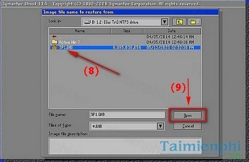

Ghost Win 7, cách ghost windows 7 32bit 64bit bằng USB
Ghost Win 7, cách ghost windows 7 32bit 64bit bằng USB
Ghost windows 7 là một trong những cách cài win 7 nhanh và hiệu quả nhất. Thay vì phải tải win 7 và cài đặt mới hệ điều hành từ đĩa CD tốn nhiều thời gian và cần phải có nhiều thiết bị phần cứng hỗ trợ, việc Ghost win 7 từ USB sẽ giúp bạn nhanh chóng cài đặt lại máy tính của mình chỉ với một vài thao tác đơn giản. Taimienphi.vn sẽ hướng dẫn các bạn cách Ghost win 7 từ USB qua bài viết này.
Ghost Win 7 là cách làm ngắn nhất giúp bạn cài mới lại hệ điều hành Windows 7 của mình. Nếu như trước đây, người dùng chỉ có cách cài mới Windows 7 bằng đĩa CD, DVD thì hiện nay với việc ghost win 7 bằng nhiều bản ghost khác nhau giúp bạn tiết kiệm được khá nhiều thời gian cũng như có được nhiều phần mềm hữu ích khác.
Có khá nhiều cách ghost Win 7. Người dùng có thể ghost win 7 bằng Onkey Ghost. Như đã biết Onekey Ghost là một trong những phần mềm hỗ trợ tạo file ghost và bug file ghost rất hiệu quả và được nhiều người dùng yêu thích và sử dụng
Ghost win 7 bằng Hiren Boot là một trong những cách làm cơ bản và được làm nhiều nhất từ trước tới nay. Với mỗi bạn sinh viên thì chiếc đĩa HirenBoot là công cụ bất ly thân khi sử dụng máy tính.
Ghost Win 7, cách ghost windows 7 32bit 64bit bằng USB
Chuẩn bị:
- USB dung lượng ≥ 1Gb.
- Phần mềm Hiren BootCD ( với mọi phiên bản)
- Phần mềm Grub4dos
- Phiên bản Windows 7 đuôi .GHO để ghost: Download Bộ gost Win 7
Bước 1: Đầu tiên bạn cần tạo ổ đĩa USB Boot với Grub4dos (Tham khảo cách tạo USB Boot bằng Grub4dos)
Sau khi thực hiện các bước trong bài viết kể trên là bạn đã có Hirenboot trong USB của mình. Tất nhiên trong Hirenboot sẽ bao gồm cả công cụ Norton Ghost giúp bạn ghost Win 7.
Bước 2: Tiếp đến bạn thực hiện các bước sau đây để ghost Win 7 bằng USB.
Đầu tiên khi khởi động máy tính, bạn boot với USB sau đó chọn Dos Program. Tham khảo cách thiết lập, chỉnh boot từ USB đầu tiên
Sau đó thực hiện các bước như hình bên dưới để truy cập vào Norton Ghost.
Để ghost Win 7, bạn chọn Local > Partition > From Image.
Tiếp đến bạn sử dụng phím mũi tên lên xuống để tìm tới vị trí file Win 7.GHO
Chọn file ghost Win 7 rồi Open.

Tại đây bạn sẽ chọn ổ đĩa để cài đặt. Thông thường khi ghost bằng USB thì bước này sẽ hiện ra 2 ổ đĩa (HDD và USB). Bạn có thể phân biệt bằng cách quan sát tổng dung lượng của 2 ổ đĩa. USB thường có dung lượng (Size) nhỏ hơn rất nhiều.
Tiếp theo bạn sẽ chọn phân vùng để cài đặt HĐH. Bước này rất quan trọng, bạn nên cài vào phân vùng hệ thống đã cài đặt trước đó để Norton Ghost ghi đè. Mặt khác nếu ghi vào phân vùng chứa dữ liệu, tất cả dữ liệu của bạn sẽ "không cánh mà bay."
Bấm Yes để xác nhận cảnh báo.
Cuối cùng Norton Ghost sẽ thực hiện quá trình ghost Win 7. Bất cứ lỗi nào xuất hiện trong bước này đều gây ra trục trặc cho HĐH. Chính vì thế bạn nên ngồi trước màn hình để quan sát quá trình ghost có phát sinh lỗi hay không.
Như vậy là Taimienphi.vn vừa giới thiệu tới bạn cách ghost win 7, ghost window 7 bằng USB. Thông thường nếu ghost lỗi thì đều do bản Ghost Win 7 của bạn download trên mạng gặp vấn đề. Bạn nên tìm đường dẫn khác để tải và ghost lại.
Nếu sử dụng hệ điều hành Windows 8, các bạn cũng có thể sử dụng nhiều cách ghost win 8 để tiết kiệm thời gian thay vì sử dụng cách cách cài win 8 mất thời gian trước đây.
Tương tự Win 8, với Win 10, bạn hoàn toàn có thể sử tham khảo cáccách ghost win 10 để làm mới hệ điều hành của mình.
Nếu thực hiện Ghost Win XP, Win 8 hay Ghost Win 10, các bạn tải
* Bộ ghost Windows XP: Download Bộ ghost Win XP
* Bộ ghost Windows 8: Download Bộ ghost Win 8
* Bộ ghost Windows 10: Download Bộ ghost Win 10
Norton Ghost là phần mềm chạy trên môi trường DOS và môi trường Windows, hiện nay Norton Ghost được người dùng tích hợp sẵn trên ổ cứng để khi máy tính bị lỗi là có thể khắc phục được ngày không cần phải có ổ CD/DVD Rom. Cũng có chức năng tương như Norton Ghost đó là Onekey Ghost, các bạn cũng có thể tải Onekey Ghost ... để ghost windows 7 hiệu quả.
* Ghost Win 7 bằng Norton Ghost
Bước 1: Các bạn tải Norton Ghost
Khi máy tính khởi động sẽ cho bạn 2 lựa chọn:
- Một là truy cập vào hệ điều hành bình thường
- Hai là truy cập vào phần mềm Norton Ghost. Bạn lựa chọn dòng thứ 2 để vào Norton Ghost.
Ghost Windows 7 bằng phần mềm Norton Ghost
Bước 2: Sau đó chương trình sẽ khởi động Norton Ghost bạn chọn OK
Bước 3: Tại đây bạn chọn Local rồi Partition rồi chọn From Image
Bước 4: Bạn chọn phím mũi tên để lựa chọn phân vùng lưu File Ghost
Bước 5: Tại đây lựa chọn file Ghost đã lưu trước đó rồi sau đó Click Open để bung file Ghost đó ra
Bước 6: Bạn lựa chọn ổ cứng (nếu máy tính của bạn có ngắn từ 2 ổ cứng trở lên bạn phải lựa chọn chính xác ổ cứng cần Ghost tránh tình trạng mất dữ liệu khi Ghost nhầm) sau đó Click OK để tiến hành Ghost
Bước 7: Sau khi lựa chọn được ổ cứng, bạn cần lựa chọn phân vùng ổ cứng để Ghost rồi Click OK
Bước 8: Khi có thông báo bạn chọn Yes để xác định
Bước 9: Sau khi nhấn Yes chương trình sẽ tiến hành Ghost lại máy tính của bạn, bạn đợi trong một vài phút sau đó khởi động lại máy tính sẽ vào được hệ điều hành Windows 7 như ý muốn.
http://thuthuat.taimienphi.vn/ghost-win-7-bang-norton-ghost-1238n.aspx
Như vậy chúng tôi đã hướng dẫn các bạn xong cách Ghost Windows 7 bằng phần mềm Norton Ghost, không cần sử dụng đến ổ CD/DVD.